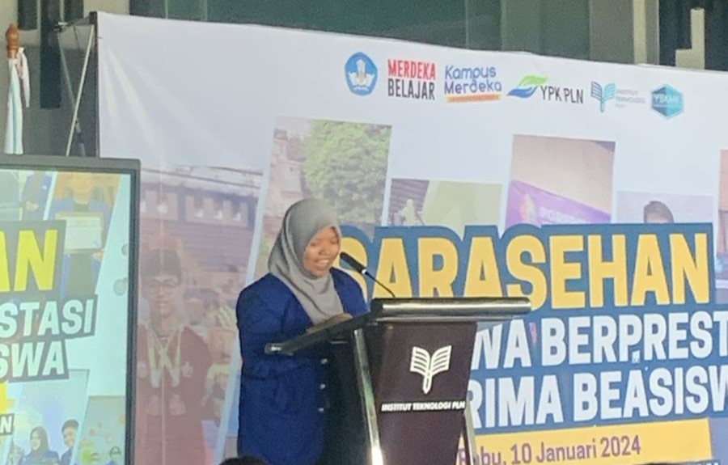
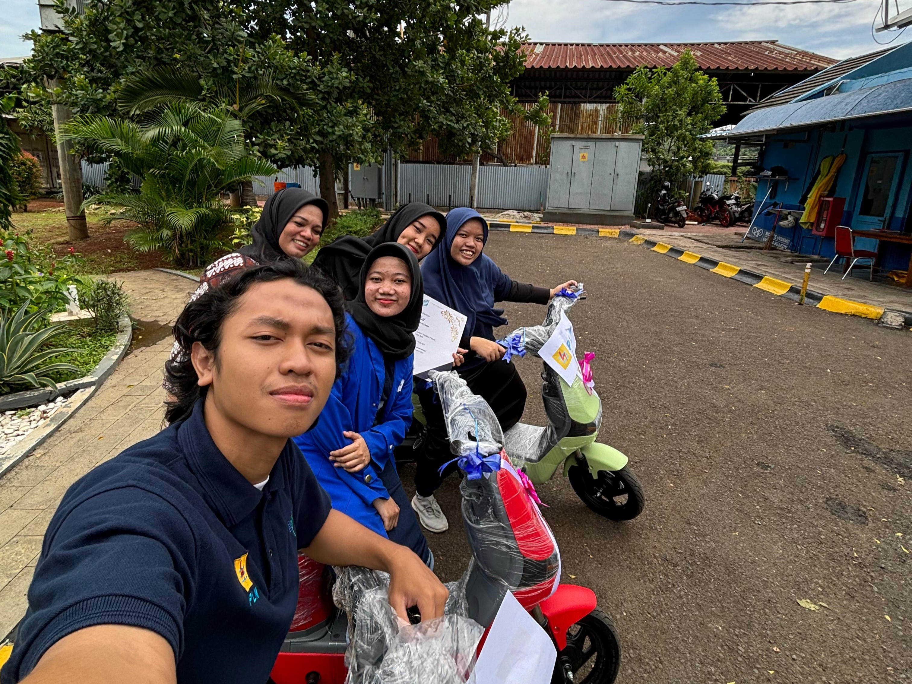
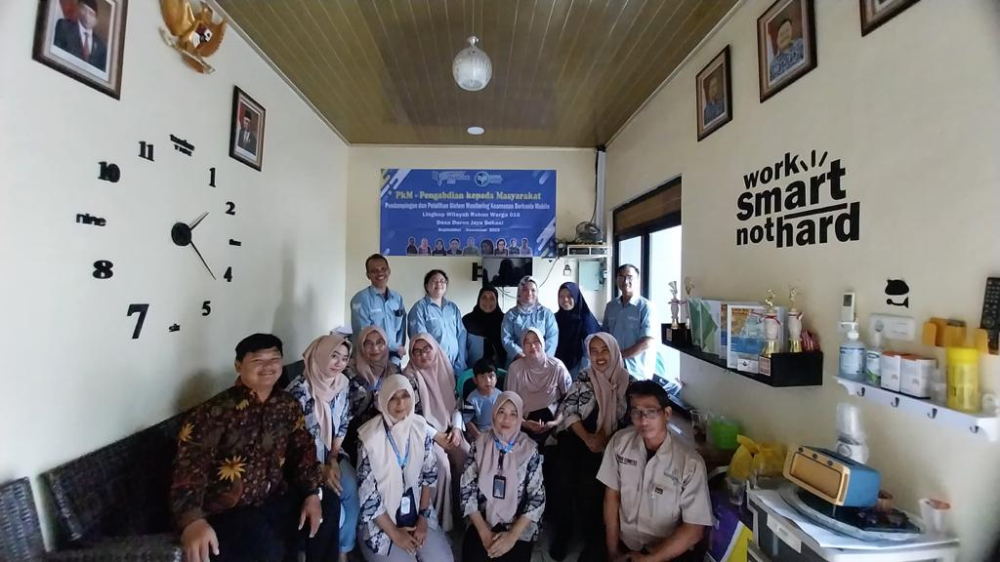
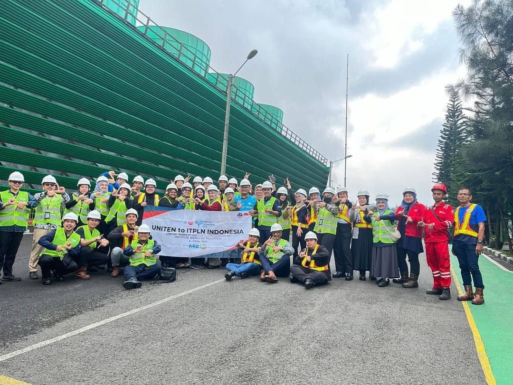

My Experience

It's an honor to represent the outstanding students and scholarship recipients at the PLN Institute of Technology. The support from professors, classmates, and scholarships has fueled our growth and dreams.
We've gained invaluable skills and are ready to tackle future challenges. Let's strive for excellence and contribute to society with integrity and innovation. Thank you for believing in us.

Leading with Nakama.id through a dynamic five-month incubation journey was exhilarating. We honed our roadmap, financial strategies, and market testing skills, while collaborating with PLN for product testing. Showcasing our innovation at ENLIT ASIA 2023 and pitching to investors were pivotal moments. The SNEKTI 2023 Seminar provided invaluable insights.
Our journey underscores that with dedication, dreams can indeed materialize.

I worked on Mo-Tamu, a project to implement a mobile guest monitoring system at Perumahan Bunga Raya. As a student representative, I helped guide the community. We published a scientific article and made a video campaign about the project.
It was inspiring to see our impact. I hope this encourages others to engage in community service.

I recently had an amazing experience with the eMobility program visiting PLN Indonesia Power's geothermal power plant. Seeing the technology and processes behind geothermal energy was fascinating and gave me a deep appreciation for sustainable energy production. It was a rare and valuable opportunity that inspired me to keep exploring renewable energy.
I hope this story encourages others to seek out and value such experiences.

As a student worker in the marketing and admissions department, I gained invaluable experience in both marketing and administration, crucial for student enrollment at our campus. This role allowed me to learn practical skills in promoting our programs and managing admissions processes. It was an incredible opportunity that provided me with a solid foundation for my future career.
I hope my story inspires others to take on similar roles and make the most of the learning opportunities they offer.